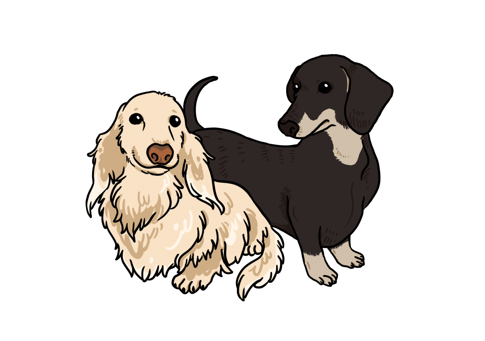

臘腸犬

外表
一隻正常大小的臘腸犬平均有5至10公斤重，現代的臘腸犬有著彎曲的雙腿，鬆軟的皮膚和突出的胸部，許多特性由人為培養而來，以增強它們在狹小空間的活動能力。根據皮毛，它們可以分為三種：光毛型、長毛型和剛毛型。剛毛型的脊骨通常比另外兩種要短。
性格
臘腸犬是忠誠、頑皮的犬種，。被毛種類常常被認為與其性格有關。比如，長毛型臘腸犬與其他種類相比，更不易興奮，因為它們是與西班牙獵狗雜交來獲得其長毛的特性的。但是，一些擁有長毛型臘腸犬的人也可能不這樣認為。由於這種犬種的性格特徵和突出的胸部，臘腸犬通常有一個較大的肺，使它們獲得與其體型不大相配的響亮叫聲。
歷史
有人認為臘腸犬起源於古埃及，因為在圖畫上有短腿的獵狗。但是現代的臘腸犬應歸功於歐洲養犬人的苦勞，它們是德國、法國和英國獵犬和鐵利亞的混合種。很多歐洲皇家都養了臘腸犬，其中英國維多利亞女王的朝廷尤其喜愛這種狗。
飼養注意事項
脊椎長，負擔較重，需避免上下樓梯、跳躍等動作
千萬不行前肢站立，會因脊椎負擔太大而受傷
脊椎長，容易出現椎間盤易位、長骨刺等疾病
眼睛容易有白內障
體內容易長結石